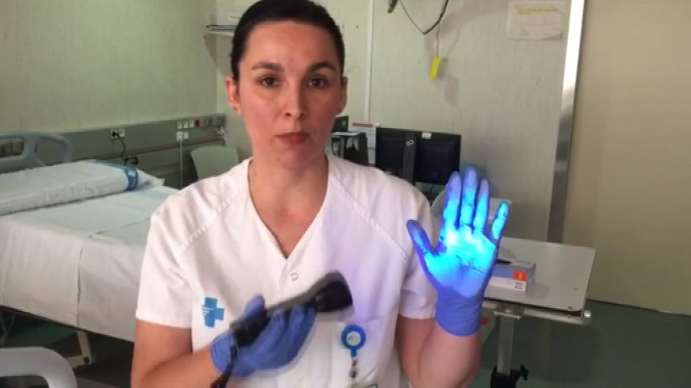

La demostración de la dificultad de usar correctamente los guantes sin infectar todo lo que tocamos

El uso de guantes no nos protege de la COVID-19 tanto como pensábamos.La Sociedad Española de Medicina Preventiva desaconseja su uso indiscriminado y defiende el lavado de manos como método más eficaz para evitar el contagio.Utilizar correctamente los guantes no es fácil, la mayoría de veces contaminamos sin darnos cuenta.Según Laia Castellà, enfermera del Grupo de Control de Infección del Hospital Germans Trias, su uso nos ofrece una falsa sensación de protección que hace que toquemos más superficies de las que de debemos.Así lo demuestra en este vídeo ilustrativo que muestra la protección que ejerce el guante a la hora de tocar una superficie contaminada.
Le enfermera utiliza unos guantes, la luz ultravioleta y polvo para hacer una demostración gráfica de lo difícil que usar usarlos correctamente sin contagiarnos.Lo primero que hace es contaminar virtualmente una superficie limpia que no tiene ningún residuo, pasa su mano con guantes limpios por encima y la luz muestra como el guante ha quedado completamente contaminado de bacterias.Luego empieza a tocar zonas de la habitación y va dejando 'reservorios del virus'.
'Su uso nos ofrece una falsa sensación de protección que hace que toquemos más superficies de las que de debemos'
A pesar de cambiarse los guantes y ponerse unos nuevos ha dejado parte de las superficies contaminadas.Ella se siente protegida al llevar guantes limpios y por eso toca todas las superficies pensando que con el guante no hay riesgo, pero en realidad, ya han sido contaminadas.Por lo tanto, al tocarse la cara y otras partes de su cuerpo todas las bacterias se transmiten y el contagio es directo, pese a haber utilizado guantes en todo momento.
Por eso, desde el equipo de Control de Infección del Hospital Germans Trias de Barcelona recomiendan la higiene de manos antes del uso indiscriminado de guantes.La enfermera y miembro del grupo, Laia Castellà, da respuesta a todas las dudas respecto al uso correcto de guantes.
La higiene de manos es la medida más simple y eficaz para la prevención de transmisión de infecciones y para evitar la transmisión de enfermedades infecciosas mediante el contacto de superficies contaminadas con nuestras manos.
No recomendamos el uso de guantes para todo porque los guantes nos ofrecen una falsa sensación que hace que al sentirnos protegidos toquemos mas superficies que las debemos con las manos posiblemente contaminadas.Esa seguridad hace que al mismo tiempo que tocamos diferentes superficies nos toquemos nosotros mismos y nos ponemos en riesgo.
El uso de guantes tiene otros inconvenientes como la sensación de protección.Como nos sentimos protegidos nos lavamos menos las manos, cuando vamos con las manos desnudas tenemos mas sensación de riesgo y después de tocar superficies de alto contacto tenemos la sensación de habernos contaminado.Eso nos lleva a hacer una higiene de manos.En cambio, si llevamos guantes, como nos sentimos protegidos, tocamos superficies de riesgo y luego podemos manipular cosas o a nosotros mismos y eso nos lleva a que nos podemos contaminar.

Los guantes están indicados a nivel sanitario para manipular fluidos, para manipular piel no integra y nos ofrecen una protección a nivel sanitario.Pero a nivel comunitario solo se debe usar guantes para manipular aquellas cosas que no tienen una protección, como las frutas y verduras en un supermercado o en un espacio público.
Posted On: 2020-05-12T00:00:00

Content Date: 2020-05-12
Download Date: 2021-04-21
Document ID: L0C04AIU5